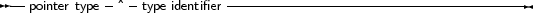

Free Pascal supports the use of pointers. A variable of the pointer type contains an address in memory, where the data of another variable may be stored. A pointer type can be defined as follows:
_________________________________________________________________________________________________________Pointer types

___________________________________________________________________
As can be seen from this diagram, pointers are typed, which means that they point to a particular kind of data. The type of this data must be known at compile time.
Dereferencing the pointer (denoted by adding ^ after the variable name) behaves then like a variable. This variable has the type declared in the pointer declaration, and the variable is stored in the address that is pointed to by the pointer variable. Consider the following example:
Program pointers;
type Buffer = String[255]; BufPtr = ^Buffer; Var B : Buffer; BP : BufPtr; PP : Pointer; etc.. |
In this example, BP is a pointer to a Buffer type; while B is a variable of type Buffer. B takes 256 bytes memory, and BP only takes 4 (or 8) bytes of memory: enough memory to store an address.
The expression
BP^
|
is known as the dereferencing of BP. The result is of type Buffer, so
BP^[23]
|
Denotes the 23-rd character in the string pointed to by BP.
Remark: Free Pascal treats pointers much the same way as C does. This means that a pointer to some type can be treated as being an array of this type.
From this point of view, the pointer then points to the zeroeth element of this array. Thus the following pointer declaration
Var p : ^Longint;
|
can be considered equivalent to the following array declaration:
Var p : array[0..Infinity] of Longint;
|
The difference is that the former declaration allocates memory for the pointer only (not for the array), and the second declaration allocates memory for the entire array. If the former is used, the memory must be allocated manually, using the Getmem function. The reference P^ is then the same as p[0]. The following program illustrates this maybe more clear:
program PointerArray;
var i : Longint; p : ^Longint; pp : array[0..100] of Longint; begin for i := 0 to 100 do pp[i] := i; { Fill array } p := @pp[0]; { Let p point to pp } for i := 0 to 100 do if p[i]<>pp[i] then WriteLn (’Ohoh, problem !’) end. |
Free Pascal supports pointer arithmetic as C does. This means that, if P is a typed pointer, the instructions
Inc(P);
Dec(P); |
Will increase, respectively decrease the address the pointer points to with the size of the type P is a pointer to. For example
Var P : ^Longint;
... Inc (p); |
will increase P with 4, because 4 is the size of a longint.
Normal arithmetic operators on pointers can also be used, that is, the following are valid pointer arithmetic operations:
var p1,p2 : ^Longint;
L : Longint; begin P1 := @P2; P2 := @L; L := P1-P2; P1 := P1-4; P2 := P2+4; end. |
Here, the value that is added or substracted is multiplied by the size of the type the pointer points to. In the previous example P1 will be decremented by 16 bytes, and P2 will be incremented by 16.